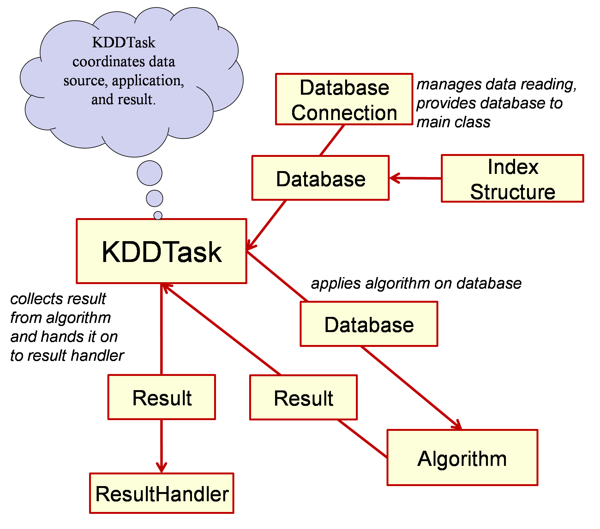

|
|
|||||||||||||||||||||
| PREV NEXT | FRAMES NO FRAMES | |||||||||||||||||||||
See:
Description
| Packages | |
|---|---|
| de.lmu.ifi.dbs.elki | ELKI framework "Environment for Developing KDD-Applications Supported by Index-Structures"
KDDTask is the main class of the ELKI-Framework
for command-line interaction. |
| de.lmu.ifi.dbs.elki.algorithm | Algorithms suitable as a task for the KDDTask main routine. |
| de.lmu.ifi.dbs.elki.algorithm.clustering | Clustering algorithms
Clustering algorithms are supposed to implement the Algorithm-Interface. |
| de.lmu.ifi.dbs.elki.algorithm.clustering.correlation | Correlation clustering algorithms |
| de.lmu.ifi.dbs.elki.algorithm.clustering.correlation.cash | Helper classes for the CASH algorithm. |
| de.lmu.ifi.dbs.elki.algorithm.clustering.subspace | Axis-parallel subspace clustering algorithms The clustering algorithms in this package are instances of both, projected clustering algorithms or subspace clustering algorithms according to the classical but somewhat obsolete classification schema of clustering algorithms for axis-parallel subspaces. |
| de.lmu.ifi.dbs.elki.algorithm.clustering.subspace.clique | Helper classes for the CLIQUE algorithm. |
| de.lmu.ifi.dbs.elki.algorithm.outlier | Outlier detection algorithms |
| de.lmu.ifi.dbs.elki.algorithm.statistics | Statistical analysis algorithms The algorithms in this package perform statistical analysis of the data (e.g. compute distributions, distance distributions etc.) |
| de.lmu.ifi.dbs.elki.application | Base classes for stand alone applications. |
| de.lmu.ifi.dbs.elki.application.cache | Utility applications for the persistence layer such as distance cache builders. |
| de.lmu.ifi.dbs.elki.application.internal | Internal utilities for development. |
| de.lmu.ifi.dbs.elki.application.visualization | Visualization applications in ELKI. |
| de.lmu.ifi.dbs.elki.data | Basic classes for different data types, database object types and label types. |
| de.lmu.ifi.dbs.elki.data.cluster | Cluster classes. |
| de.lmu.ifi.dbs.elki.data.cluster.naming | Naming schemes for clusters (for output when an algorithm doesn't generate cluster names). |
| de.lmu.ifi.dbs.elki.data.images | Package for processing image data (e.g. compute color histograms) |
| de.lmu.ifi.dbs.elki.data.model | Cluster models classes for various algorithms. |
| de.lmu.ifi.dbs.elki.data.synthetic | Generators for synthetic data sets |
| de.lmu.ifi.dbs.elki.data.synthetic.bymodel | Generator using a distribution model specified in an XML configuration file. |
| de.lmu.ifi.dbs.elki.data.synthetic.bymodel.distribution | Data generators used by the model-based generator. |
| de.lmu.ifi.dbs.elki.database | ELKI database layer - loading, storing, indexing and accessing data |
| de.lmu.ifi.dbs.elki.database.connection | Database connections are classes implementing data sources. |
| de.lmu.ifi.dbs.elki.distance | Distances and (in subpackages) distance functions and similarity functions. |
| de.lmu.ifi.dbs.elki.distance.distancefunction | Distance functions for use within ELKI. |
| de.lmu.ifi.dbs.elki.distance.distancefunction.adapter | Distance functions deriving distances from e.g. similarity measures |
| de.lmu.ifi.dbs.elki.distance.distancefunction.colorhistogram | Distance functions using correlations. |
| de.lmu.ifi.dbs.elki.distance.distancefunction.correlation | Distance functions using correlations. |
| de.lmu.ifi.dbs.elki.distance.distancefunction.external | Distance functions using external data sources. |
| de.lmu.ifi.dbs.elki.distance.distancefunction.subspace | Distance functions based on subspaces. |
| de.lmu.ifi.dbs.elki.distance.distancefunction.timeseries | Distance functions designed for time series. |
| de.lmu.ifi.dbs.elki.distance.similarityfunction | Similarity functions. |
| de.lmu.ifi.dbs.elki.distance.similarityfunction.kernel | Kernel functions. |
| de.lmu.ifi.dbs.elki.evaluation | Functionality for the evaluation of algorithms. |
| de.lmu.ifi.dbs.elki.evaluation.histogram | Functionality for the evaluation of algorithms using histograms. |
| de.lmu.ifi.dbs.elki.evaluation.paircounting | Evaluation of clustering results via pair counting. |
| de.lmu.ifi.dbs.elki.evaluation.paircounting.generator | Pair generation for pair counting evaluation. |
| de.lmu.ifi.dbs.elki.evaluation.roc | Evaluation of rankings using ROC AUC (Receiver Operation Characteristics - Area Under Curve) |
| de.lmu.ifi.dbs.elki.gui | Graphical User Interfaces for ELKI |
| de.lmu.ifi.dbs.elki.gui.minigui | A very simple UI to build ELKI command lines. |
| de.lmu.ifi.dbs.elki.gui.util | Utility classes for GUIs (e.g. a class to display a logging panel) |
| de.lmu.ifi.dbs.elki.index | Index structure implementations |
| de.lmu.ifi.dbs.elki.index.tree | Tree-based index structures |
| de.lmu.ifi.dbs.elki.index.tree.metrical | Tree-based index structures for metrical vector spaces. |
| de.lmu.ifi.dbs.elki.index.tree.metrical.mtreevariants | M-Tree and variants. |
| de.lmu.ifi.dbs.elki.index.tree.metrical.mtreevariants.mktrees | Metrical index structures based on the concepts of the M-Tree supporting processing of reverse k nearest neighbor queries by using the k-nn distances of the entries. |
| de.lmu.ifi.dbs.elki.index.tree.metrical.mtreevariants.mktrees.mkapp | MkAppTree |
| de.lmu.ifi.dbs.elki.index.tree.metrical.mtreevariants.mktrees.mkcop | MkCoPTree |
| de.lmu.ifi.dbs.elki.index.tree.metrical.mtreevariants.mktrees.mkmax | MkMaxTree |
| de.lmu.ifi.dbs.elki.index.tree.metrical.mtreevariants.mktrees.mktab | MkTabTree |
| de.lmu.ifi.dbs.elki.index.tree.metrical.mtreevariants.mtree | MTree |
| de.lmu.ifi.dbs.elki.index.tree.metrical.mtreevariants.split | Splitting strategies of nodes in an M-Tree (and variants). |
| de.lmu.ifi.dbs.elki.index.tree.metrical.mtreevariants.util | Helper classes for the the M-Tree and it's variants. |
| de.lmu.ifi.dbs.elki.index.tree.spatial | Tree-based index structures for spatial indexing. |
| de.lmu.ifi.dbs.elki.index.tree.spatial.rstarvariants | R*-Tree and variants. |
| de.lmu.ifi.dbs.elki.index.tree.spatial.rstarvariants.deliclu | DeLiCluTree |
| de.lmu.ifi.dbs.elki.index.tree.spatial.rstarvariants.rdknn | RdKNNTree |
| de.lmu.ifi.dbs.elki.index.tree.spatial.rstarvariants.rstar | RStarTree |
| de.lmu.ifi.dbs.elki.index.tree.spatial.rstarvariants.util | Utilities for R*-Tree and variants. |
| de.lmu.ifi.dbs.elki.logging | Logging facility for controlling logging behavior of the complete framework. |
| de.lmu.ifi.dbs.elki.logging.progress | Progress status objects (for UI) |
| de.lmu.ifi.dbs.elki.math | Mathematical operations and utilities used throughout the framework. |
| de.lmu.ifi.dbs.elki.math.linearalgebra | Linear Algebra package provides classes and computational methods for operations on matrices. |
| de.lmu.ifi.dbs.elki.math.linearalgebra.fitting | Function to numerically fit a function (such as a
Gaussian distribution
to given data. |
| de.lmu.ifi.dbs.elki.math.linearalgebra.pca | Principal Component Analysis (PCA) and Eigenvector processing. |
| de.lmu.ifi.dbs.elki.math.linearalgebra.pca.weightfunctions | Weight functions used in weighted PCA via WeightedCovarianceMatrixBuilder |
| de.lmu.ifi.dbs.elki.math.spacefillingcurves | Space filling curves. |
| de.lmu.ifi.dbs.elki.math.statistics | Statistical tests and methods. |
| de.lmu.ifi.dbs.elki.normalization | Data normalization (and reconstitution) of data sets. |
| de.lmu.ifi.dbs.elki.parser | Parsers for different file formats and data types. |
| de.lmu.ifi.dbs.elki.parser.meta | MetaParsers for different file formats and data types. |
| de.lmu.ifi.dbs.elki.persistent | Persistent data management. |
| de.lmu.ifi.dbs.elki.preprocessing | Preprocessors used for data preparation in a first step of various algorithms or distance and similarity measures. |
| de.lmu.ifi.dbs.elki.properties | Property handling and main ELKI properties file. |
| de.lmu.ifi.dbs.elki.result | Result types, representation and handling |
| de.lmu.ifi.dbs.elki.result.outlier | Outlier result classes |
| de.lmu.ifi.dbs.elki.result.textwriter | Text serialization (CSV, Gnuplot, Console, ...) |
| de.lmu.ifi.dbs.elki.result.textwriter.writers | Serialization handlers for individual data types. |
| de.lmu.ifi.dbs.elki.utilities | Utility and helper classes - commonly used data structures, output formatting, exceptions, ... |
| de.lmu.ifi.dbs.elki.utilities.documentation | Documentation utilities: Annotations for Title, Description, Reference |
| de.lmu.ifi.dbs.elki.utilities.heap | Variants of heap structures. |
| de.lmu.ifi.dbs.elki.utilities.optionhandling | Parameter handling and option descriptions. |
| de.lmu.ifi.dbs.elki.utilities.optionhandling.constraints | Constraints allow to restrict possible values for parameters. |
| de.lmu.ifi.dbs.elki.utilities.optionhandling.parameterization | Configruation managers |
| de.lmu.ifi.dbs.elki.utilities.optionhandling.parameters | Classes for various typed parameters. |
| de.lmu.ifi.dbs.elki.utilities.pairs | Pairs and triples utility classes. |
| de.lmu.ifi.dbs.elki.utilities.referencepoints | Package containing strategies to obtain reference points Shared code for various algorithms that use reference points. |
| de.lmu.ifi.dbs.elki.utilities.scaling | Scaling functions: linear, logarithmic, gamma, clipping, ... |
| de.lmu.ifi.dbs.elki.utilities.scaling.outlier | Scaling of Outlier scores, that require a statistical analysis of the occurring values |
| de.lmu.ifi.dbs.elki.utilities.xml | XML and XHTML utilities. |
| de.lmu.ifi.dbs.elki.visualization | Visualization package of ELKI. |
| de.lmu.ifi.dbs.elki.visualization.batikutil | Commonly used functionality useful for Apache Batik. |
| de.lmu.ifi.dbs.elki.visualization.colors | Color scheme handling for ELKI. |
| de.lmu.ifi.dbs.elki.visualization.css | Managing CSS styles / classes. |
| de.lmu.ifi.dbs.elki.visualization.gui | Package to provide a visualization GUI. |
| de.lmu.ifi.dbs.elki.visualization.gui.overview | Classes for managing the overview plot. |
| de.lmu.ifi.dbs.elki.visualization.opticsplot | Code for drawing OPTICS plots |
| de.lmu.ifi.dbs.elki.visualization.savedialog | Save dialog for SVG plots. |
| de.lmu.ifi.dbs.elki.visualization.scales | Scales handling for plotting. |
| de.lmu.ifi.dbs.elki.visualization.style | Style management for ELKI visualizations. |
| de.lmu.ifi.dbs.elki.visualization.style.lines | Generate line styles for plotting in CSS |
| de.lmu.ifi.dbs.elki.visualization.svg | Base SVG functionality (generation, markers, thumbnails, export, ...). |
| de.lmu.ifi.dbs.elki.visualization.visualizers | Visualizers for various results |
| de.lmu.ifi.dbs.elki.visualization.visualizers.adapter | Adapters to map results to visualizers. |
| de.lmu.ifi.dbs.elki.visualization.visualizers.vis1d | Visualizers based on 1D projections. |
| de.lmu.ifi.dbs.elki.visualization.visualizers.vis2d | Visualizers based on 2D projections. |
| de.lmu.ifi.dbs.elki.visualization.visualizers.visunproj | Visualizers that do not use a particular projection. |
ELKI: Environment for DeveLoping KDD-Applications Supported by Index-Structures.
ELKI is a generic framework for a broad range of KDD-applications and their development. For background, contact-information, and contributors see http://www.dbs.ifi.lmu.de/research/KDD/ELKI/.
This is the documentation for version 0.3, published as:
Achtert, E., Kriegel, H.-P., Reichert, L., Schubert, E., Wojdanowski, R., and Zimek, A.:
Visual Evaluation of Outlier Detection Models.
In Proc. 15th International Conference on Database Systems for Advanced Applications (DASFAA), Tsukuba, Japan, 2010.
The database connection manages reading of input files or databases and provides a Database-Object as a virtual database to the KDDTask.
The KDDTask applies a specified algorithm on this database and collects the result from the algorithm.
Finally, KDDTask hands on the obtained result to a ResultHandler.
The default-handler is ResultWriter, writing the result to STDOUT or,
if specified, into a file.

To use the KDD-Framework we recommend an executable .jar-file:
elki.jar. Since release 0.3 it will by default invoke a minimalistic GUI when
you call java -jar elki.jar. For command line use, you get a description of usage by calling
java -cp elki.jar de.lmu.ifi.dbs.elki.application.KDDCLIApplication -h.
You can read more about the MiniGUI and Visualizations on a separate page.
The KNNExplorer application published
with ELKI 0.2 is explained in the technical documentation.
The core class is KDDTask for command line interaction.
This class' main method manages the reading of parameters from the standard input and passes the parameters to the
corresponding classes which, in turn, could have parameters that expect parameterization.
The main class KDDTask requires specification of an
Algorithm
to use, and a DatabaseConnection to manage the input.
It can get assigned a specialized ResultHandler.
The default ResultHandler ResultWriter expects
a filename where to deploy the output. However, by omitting specification of a filename for
output, the results will be given to standard output, thus it may be piped directly to another
application.
For more information on using files and available formats
as data input see de.lmu.ifi.dbs.elki.parser.
Furthermore a normalization can be specified for the input. You can additionally require to restore the original values for the output.
Which input is to be provided in what way
is to be defined via parameters specifically for a certain
DatabaseConnection.
The need for other parameters may differ from implementation to implementation. However, you need not to specify input nor output if you are going to implement an algorithm.
An extensive list of parameters can be browsed sorted by class or sorted by option ID.
Some examples of completely parameterized calls for different algorithms are described at example calls.
A list of related articles can be found in the class article references list.
|
|
|||||||||||
| PREV NEXT | FRAMES NO FRAMES | |||||||||||